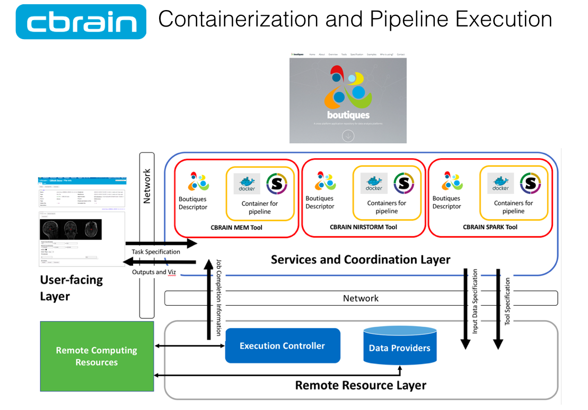
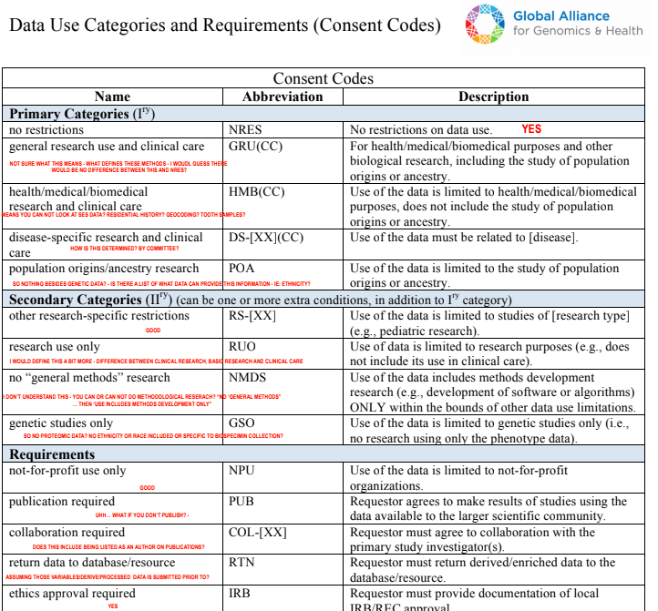

Open Science
Cuban Neuroscience Centre
February 2019
Samir Das
Associate Director - Research Software Development
McGill Centre for Integrative Neuroscience
Montreal Neurological Institute

|

|

|
What’s involved?
Longitudinal Acquisition, Storage and Curation, Interoperability, Reproducibility, Transfer, Anonymization, Security, Privacy, Ethics, APIs, Validation, Quality Control, Protocol Checking, Preprocessing, Analysis, HPC,
Provenance, Ontological Standarization,
Data Harmonization, Upgrades, Maintenance, Bug Fixes, User Interface, Javascript, Bootstrap, Tracking, Extensibility, Data Management, Summary Statistics, Workflows,
Development, Tool Integration, Data Sharing, Download, Multi-Modal Linking, Querying, Image Processing, Visualization, Networking, System Administration, Partnerships, Funding, HR
...No big deal!
What is Open Science?


Open Science Initiatives

|

|


Richard Stallman |


|
Data Publishing
- Not Data Sharing -


Benefits of Open Science
Increased exposure
Greater collaborations
More citations
Less money spent of patents
New funding opportunities
Improved reproducibility
Enable scientific discovery
It's the future!
Aled Edwards video
Interoperability
Ontological Harmonization

API

File Formats

Imaging and Genomics

|

|
Standardization


|


|

Improved Infrastructure
Databases, NoSQL, APIs, Version Control, Provenance Capture
Connectivity and Data Access

HPCs
SQL versus NoSQL


|

|


Centralized or Distributed?

Ethics Framework
Privacy Concerns


|
 Adrian Thorogood BIC lecture - March 9, 2016
Adrian Thorogood BIC lecture - March 9, 2016

|

|
Important value of hackathons to data sharing initiatives 
|

WHAT IS LORIS?

“LORIS is a modular and extensible web-based data management system that integrates all aspects of a multi-center study: from heterogeneous data acquisition (imaging, clinical, behavior, genetics) to storage, processing and ultimately dissemination.” |

|
Extensible and modular design


|


|

Cross-Modal Querying
Real-Time Query Results
WHAT IS CBRAIN?

|

|
..aggregates multiple distributed file systems into uniform view


BrainBrowser
..a set of web-based 3D visualization tools primarily used for viewing neurological data i.e. MRI scans.
It allows for real-time manipulation and analysis of 3D neuroimaging data through any modern web browser. TRY ME!

Volume Viewer on LORIS

Tannenbaum Open Science Initiative


|

|
Human Brain Mapping
How It's Made
BigBrain - high resolution reference brain
Multimodal integration into an anatomically realistic standard space
Years of development
20 micron resolution
7404 histological slices
1 Terabyte dataset

|
|


|

|


|

Thank you!Acknowledgements:Alan Evans, Alex Zijdenbos, Dario Vins, Jonathan Harlap, Matt Charlet, Andrew Corderey, Sebastian Muehlboeck, Reza Adalat, Louis Collins, Vladimir Fonov, Marc Rousseau, Mia Petkova, Rathi Gnanasekaran, David Brownlee, Tarek Sherif, Pierre Rioux, Nic Kassis, Leigh MacIntyre, Claude Lepage, Ilana Leppert, Natasha Beck, Tristan Glatard, Bert Vincent, Lindsay Lewis, Najma Mahani, Elodie Portales-Casamar, Alden Woodward, Sylvain Milot, Jean Francois Malouin, Daniel Kroetz, Martin Weiss, Mathieu Desrosier, Jason Karamchandani, Amit Bar-Or, Ted Fon, John Brietner, Derek Lo, Patrick Bermudez, Chris Steele, Pamela Patterson and one of my favourites: Pierre Bellec! LORIS team on left |